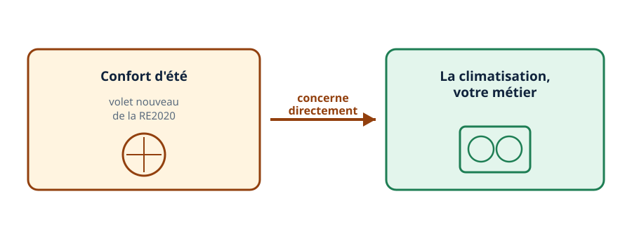
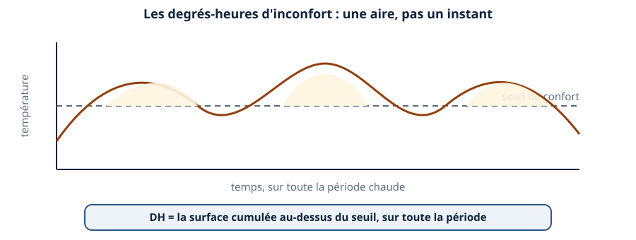
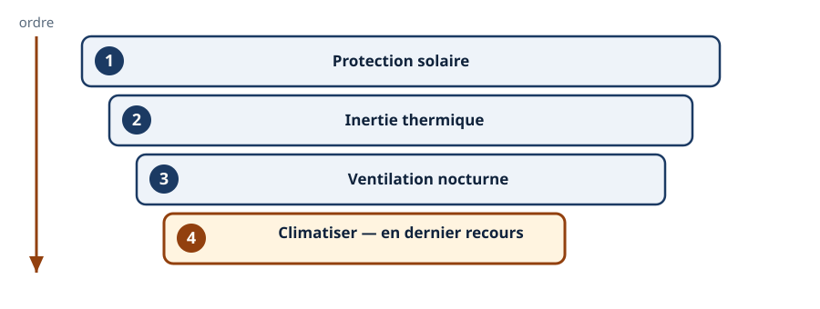
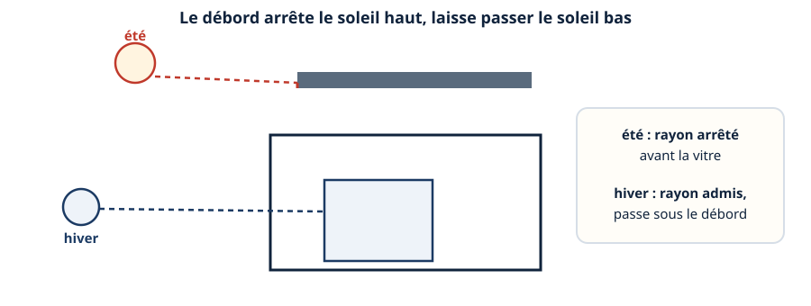
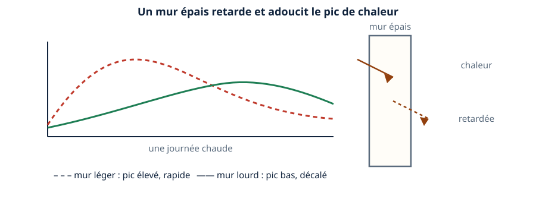
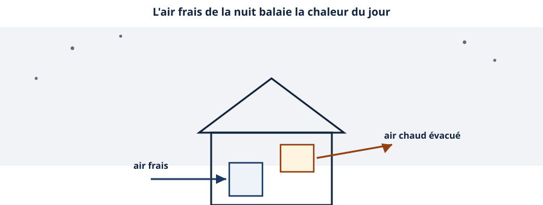
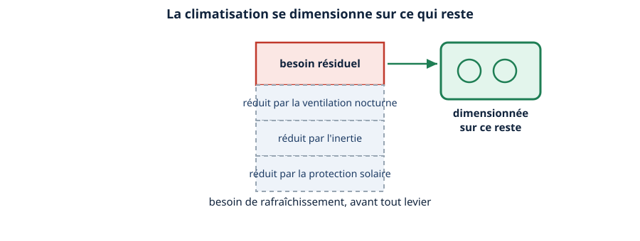
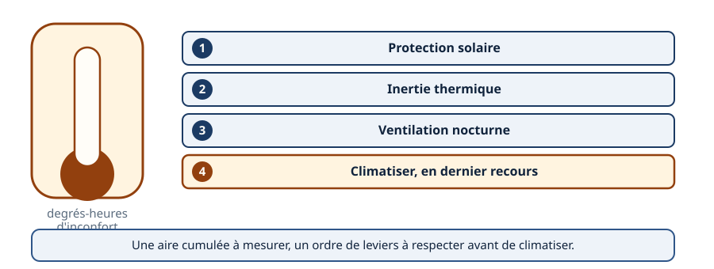

Thermique · niveau BTS
Le confort d'été — la nouveauté qui vous concerne
Mini-station commentée · 8 écrans et 4 questions · environ 10 minutes
À la fin de la station, vous savez comment se mesure l'inconfort d'été — en degrés-heures — et dans quel ordre le traiter : la conception d'abord, la climatisation en dernier recours, dimensionnée sur ce qu'il reste à couvrir.
Chaque écran peut être expliqué à voix haute : le bouton « Écouter » commente ce que vous voyez. Rien n'est dit qui ne soit aussi écrit.
Écran 1 sur 8
Une nouveauté qui vous concerne directement
Parmi les volets ajoutés par la RE2020, le confort d'été est celui qui touche le plus directement votre métier : c'est un contrôle sur la surchauffe — et une bonne partie du traitement passe par la climatisation.
La RT2012 ne mesurait pas ce volet. La RE2020 en fait un contrôle à part entière, avec son propre indicateur.

Écran 2 sur 8
Mesurer l'inconfort : les degrés-heures
Le confort d'été se mesure en degrés-heures d'inconfort (DH). Ce n'est pas une température maximale instantanée : c'est une aire cumulée, qui additionne à la fois combien de degrés on dépasse le seuil de confort, et combien de temps ce dépassement dure.
Deux logements qui atteignent la même température de pointe peuvent avoir des DH très différents, si l'un reste chaud une heure et l'autre toute la journée.

Écran 3 sur 8
La hiérarchie : la conception avant la climatisation
Traiter le confort d'été suit un ordre : la protection solaire, puis l'inertie thermique, puis la ventilation nocturne — et seulement ensuite, si besoin, la climatisation.
Ce n'est pas une question de goût : la climatisation reste souvent nécessaire, mais elle vient en dernier, sur ce que les trois premiers leviers n'ont pas suffi à traiter.

Écran 4 sur 8
Premier levier : la protection solaire
Un débord de toit, un brise-soleil ou une orientation étudiée des baies bloquent le soleil haut de l'été, qui arrive presque à la verticale, sans bloquer le soleil bas de l'hiver, qui passe dessous.
C'est le levier le plus efficace, parce qu'il agit avant même que la chaleur n'entre dans le bâtiment.

Écran 5 sur 8
Deuxième levier : l'inertie thermique
Un mur lourd — béton, terre cuite, pierre — met du temps à laisser passer la chaleur. Il stocke une partie de l'énergie reçue le jour, et la restitue plus tard, quand l'air extérieur s'est déjà rafraîchi.
Résultat : le pic de température intérieure est à la fois plus bas et plus tardif qu'avec un mur léger.

Écran 6 sur 8
Troisième levier : la ventilation nocturne
La nuit, l'air extérieur redevient plus frais que l'air intérieur. Ouvrir les fenêtres — ou piloter une ventilation mécanique la nuit — permet de purger la chaleur accumulée pendant la journée.
Le bâtiment repart chaque matin d'une température plus basse, ce qui réduit d'autant la surchauffe du jour suivant.

Écran 7 sur 8
Le dernier recours : climatiser sur ce qu'il reste
Une fois les trois leviers de conception mobilisés, il reste souvent un besoin résiduel — les degrés-heures que la conception seule ne suffit pas à effacer. C'est ce reste que la climatisation doit couvrir.
Le changement pour le métier : la climatisation n'est plus le premier réflexe d'un projet, mais un dimensionnement calculé après les leviers passifs — pas moins nécessaire, mais pensé différemment.

Écran 8 sur 8
Bilan et le réflexe
- Le confort d'été se mesure en degrés-heures d'inconfort (DH) — une aire cumulée, pas un pic instantané.
- Trois leviers de conception se mobilisent d'abord : protection solaire, inertie, ventilation nocturne.
- La climatisation vient en dernier, dimensionnée sur le besoin résiduel.
- C'est le volet de la RE2020 qui concerne le plus directement votre métier.
Le réflexe : mesurer en degrés-heures, traiter dans l'ordre — conception, puis climatisation.

Question 1 sur 4
Le confort d'été se mesure comment ?
Question 2 sur 4
Dans quel ordre traiter le confort d'été ?
Question 3 sur 4
Pourquoi un débord bloque-t-il l'été sans bloquer l'hiver ?
Question 4 sur 4
Sur quoi se dimensionne la climatisation ?
Les correspondances de la station
- La RE2020 (même sous-ligne) — le confort d'été est l'un des trois volets nouveaux de la RE2020.
- RT de l'existant (même sous-ligne) — le confort d'été compte aussi dans les projets de rénovation.